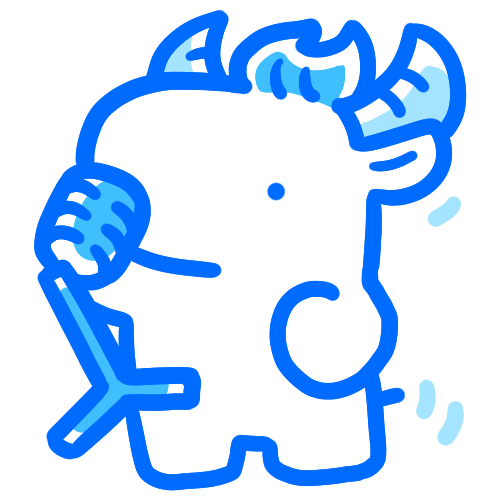

밴드 적성 검사
당신의 결과는...

세컨 기타
관심 받고 싶은데, 관심 받기 싫어!
그럴 땐, 톡톡 튀는 리드기타보단, 세컨기타!
기타를 처음 잡아본다면, 리드 기타보단 세컨 기타로 밴드 입문을 시작해도 좋을 만큼 시작하기 쉽지만 없으면 허전한 포지션! 곡의 분위기를 잡아줄 뿐더러 메인 화음을 담당하니 다른 포지션들이 의지할 수 밖에 없게 되죠. 관심 받고 싶지만, 관심 받기 싫은 당신에게 정말 잘 어울리는 포지션이예요.
이 포지션은 어때요?
보컬
악기도, 노래도 놓칠수 없다면? 보컬을 동시에 담당하는 멀티 포지션은 어때요?
나와 잘 어울리는 포지션

키보드
세컨 기타는 있는데, 리드 기타가 없을 땐? 키보드가 부족한 멜로디를 채워줄 거예요~